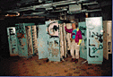
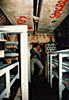

|
by Alex Gordon |
Want to explore an abandoned underground missile complex? First you'll have to find one -- most of their locations
are still top-secret. And say you do happen to find a silo, you'll still be violating federal trespassing laws, but as long
as committing a felony doesn't bother you, then be prepared once you're inside to inhale a fair share of asbestos
fibers and radon gas; the underground bases are teeming with both carcinogens.
 If you're still crazy enough to want to go exploring, we'd like to make one last appeal. Before you go, check out the Abandoned Missile Base VR Tour at http://www.xvt.com/users/kevink/silo/silo.html, where Kevin Kelm takes you through an actual photo tour of a decommissioned and abandoned complex located somewhere in Colorado.
Kelm, a 27-year-old software engineer, has explored the site three times, and on his last visit brought along a camera and lights to document his findings for posterity. It was on that third trip that Kelm and partner, co-worker David Rodenbaugh were greeted upon their return to the surface by a finger-wagging sheriff's deputy. "He ended up dropping the charges," Kelm says with a sigh of relief, -- but only after scaring the crap out of us." The deputy probably would have been a lot less sympathetic, Kelm believes, if they had exited armed with a couple six-packs and spray cans rather than a camera and safety gear.
It was this brush with the law, and of course the other inherent dangers of the abandoned complexes, that inspired Kelm to set up his VR Tour of the Titan II Missile base. Through Kelm's illustrative photos and narrative you can tour the entire base, tunnel by tunnel, walking past corridors of graffiti-strewn concrete, bent rusted metal and forbidding pools of murky water. Even though the base is deserted and beyond repair, there's something oddly captivating about touring the site. Perhaps it's a case of X-Files overload, but at every corner you half expect to find the skeletal remains from some alien experiment or some other surprise waiting for you.
 "You get this eerie feeling of death down there," Kelm says. "That's what the site was for -- to cause death; it's a good feeling to see it empty."
One day, Kelm says he'd like to actually buy an abandoned missile silo and move in. With many of the silos located on private property, ownership reverted back to ranchers and farmers when the bases were decommissioned. Many owners are willing to sell the silos rather than face a potential EPA-mandated clean-up.
Kelm's own fascination with exploring the complex is a natural outgrowth from his hobby of caving. After cutting his teeth exploring natural caves, Kelm moved on to "sewer-lunking," the clandestine exploration of storm sewers. Nowadays Kelm says he's game for investigating basically any "neat tunnel that's big enough to fit into."
Kelm put the site up just before Christmas, and by mid-January he'd received over 36,000 hits and the requisite loads of e-mail. Many of the messages ask where Kelm plans to boldly go next. While plans for future exploration were up in the air as of press time, curiosity seekers would be well advised to check out Kelm's "guaranteed authentic" personal history at http://www.xvt.com/users/kevink/hist.html, where they'll learn that among other accomplishments, Kelm "habitually watched Knight Rider (not a point of pride)" and "learned to pass out on cue."
Still there are those stubborn few messages from people who want to know where the complex is located. To those who, despite all the hazards, want to try their own amateur expedition, Kelm offers this cautionary tale:
A couple of years ago at an entirely different silo, a farmer was so fed up with trespassers visiting the complex that whenever one of his cows died he would dump the carcass down the entry-way in hopes that the smell would dissuade visitors. One olfactory-deficient visitor, upon entering the silo, slipped and plunged to what most certainly would have been his death. Luckily though, the fall was cushioned thanks to the dozen or so rotting carcasses below.